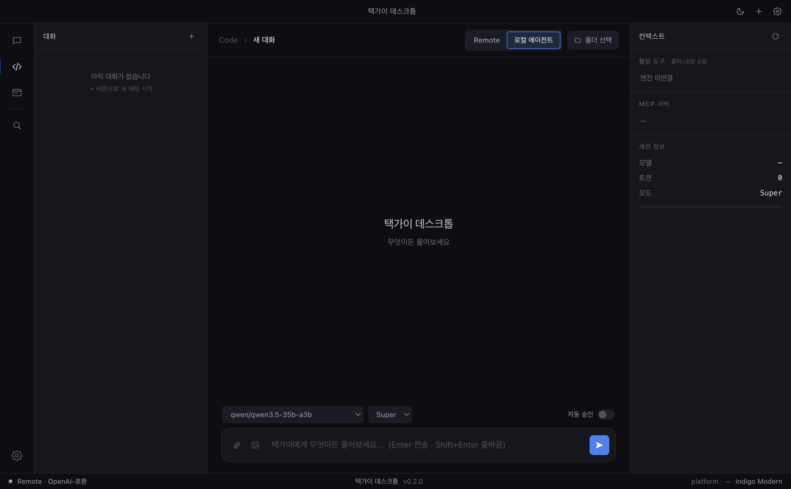

택가이웹
웹 화면, 관리자, 모델/로그/대시보드, DB와 연결되는 제품 표면
웹 화면, 관리자, 모델/로그/대시보드, DB와 연결되는 제품 표면

Go TUI, 파일/셸/git/검색 도구, 세션, 메모리, MCP

VS Code 안에서 로컬 서버와 HTTP/SSE로 통신하는 에디터형 에이전트

Electron 기반 데스크톱 앱. 현재 제작중

file_read / grep_search / glob_searchhashline_edit / file_write 기반 안전 편집